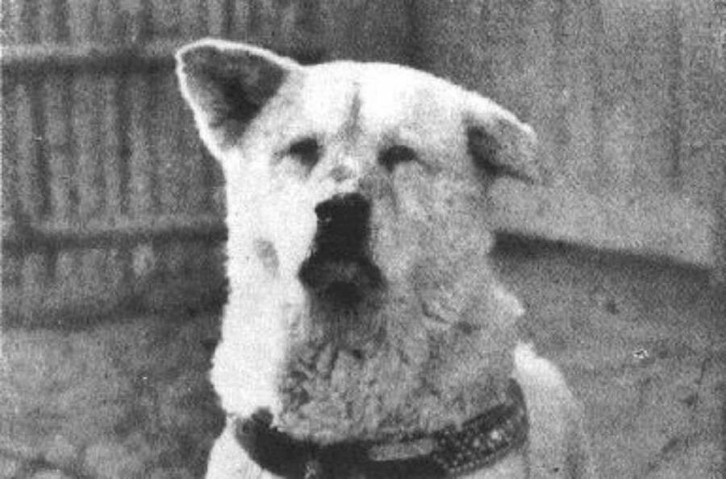
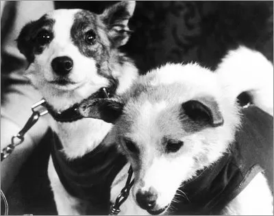

Is Buddy(right), the first dog in professional Basket ball, the best dog? With an outstanding skill
and dedication Buddy went on to win the state championship in his early years. While his career was short lived,
still very impressive!

Is it Hachiko? After his owner passed away Hachiko waited for his owner
to come home in the exact same spot for over nine years, a true showing of the loyalty any dog has toward their owner

These two brave heroes were the two first dogs who went were few men dared, Space!
Belka and Strelka are two cosmonaughts with a dream of breaking the gravitational bonds of this earth and survived!
How inspirational!
Text 4